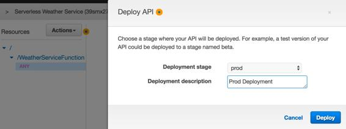
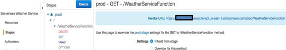
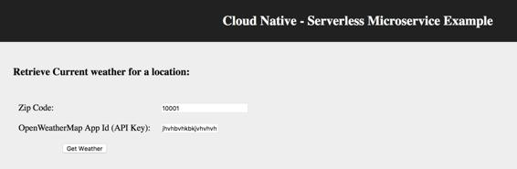

Deploying the API
After successfully testing the API, we have to deploy the API as well so that it can be active in the prod environment. For that, select the Deploy API option from the Actions drop-down menu within the API configuration screen, as follows:

Once the API is deployed, you can go to the Stages option on the left-hand side, select the prod stage, and under that, GET the HTTP method, as follows:

You can copy the deployed API's URL and try accessing it by providing the zip and the appid parameters as part of the URL as follows:
https://asdfgh.execute-api.us-east-1.amazonaws.com/prod/WeatherServiceFunction?zip=10001,us&appid=qwertyasdfg98765zxcv
Note: Please replace the highlighted text with your environment's specific values.
To make the testing process of the deployed API easier, you can also use the sample HTML page, which is available at the https://github.com/PacktPublishing/Cloud-Native-Architectures GitHub link, as follows:
<form method="get" action="https://<<updated-endpoint>>>/Prod/weatherservice">
